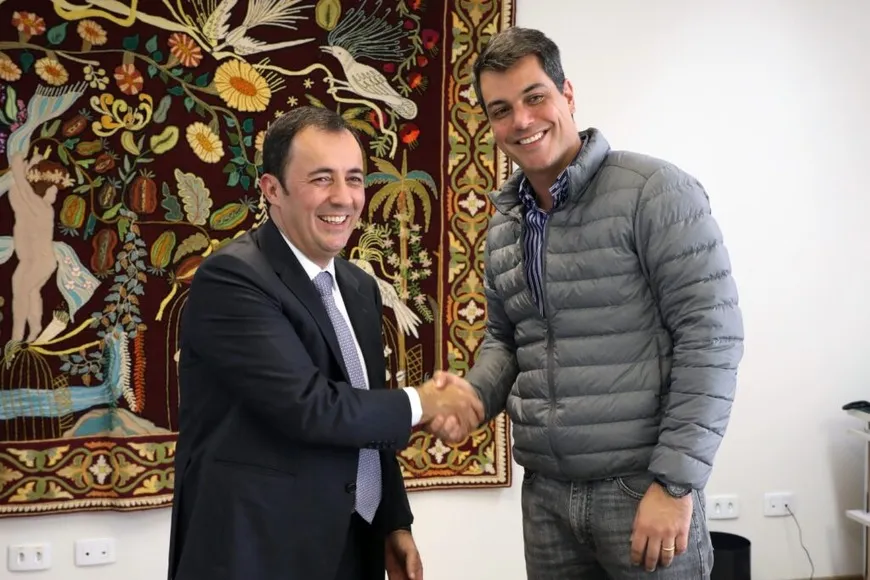

FAEP/SENAR-PR e PUCPR firmam parceria para capacitação profissional

FOTO: FAEP/SENAR/PR
Redação Sou Agro 19 de junho de 2024 às 06:30
O Sistema FAEP/SENAR-PR e a Pontifícia Universidade Católica do Paraná (PUCPR) assinaram, na segunda-feira (17), um termo de cooperação para a realização de ações voltadas ao desenvolvimento rural sustentável do Paraná, por meio da promoção de cursos de capacitação profissional e fomento a estudos e pesquisas. A parceria terá vigência de cinco anos.
Na ocasião, estavam presentes pelo Sistema FAEP/SENAR-PR, o diretor secretário, Livaldo Gemin; o vice-presidente, Ágide Eduardo Meneguette; a diretora técnica, Débora Grimm; e o superintendente, Carlos Augusto Albuquerque; enquanto da PUCPR, o reitor, Rogério Renato Mateucci; o chefe de gabinete, José André de Azevedo; o decano da Escola de Medicina e Ciências da Vida, José Knopfholz; e o coordenador do curso de Agronomia, Edilberto Nunes de Moura.
O objetivo da parceria é promover ações de educação socioambiental relacionadas ao meio rural por meio de atividades de cooperação técnica, como pesquisas, estudos e capacitação de acadêmicos, técnicos, instrutores, produtores e trabalhadores rurais. Dessa forma, o Sistema FAEP/SENAR-PR oferecerá cursos para complementar a formação acadêmica dos estudantes da PUCPR, assim como a instituição de ensino contribuirá para a capacitação de instrutores da entidade rural. Em conjunto, as instituições também fomentarão eventos de formação profissional.
A colheita deve ser no final do verão ao início do outono entre setembro e outubro.
“Essa já é uma parceria de sucesso, pois envolve duas instituições altamente comprometidas, sempre em prol da comunidade e da promoção de uma formação substancial para a sociedade, com embasamentos técnico e teórico. Por isso, estamos unidos por um bem maior, que é a formação de cidadãos cada vez melhores e mais capacitados”, destacou o vice-presidente do Sistema FAEP/SENAR-PR, Ágide Eduardo Meneguette.
“A PUCPR está sempre em busca de crescer sua relação com a cidade e o Estado na formação de gente boa, competente e compromissada com o meio ambiente, a vida e as transformações sociais. Essa parceria é firmar um compromisso ainda maior em relação aos nossos objetivos de formação integrada e de uma universidade aberta e à disposição da sociedade”, sintetizou o reitor da PUCPR, Rogério Renato Mateucci.
Além das capacitações de Formação Profissional Rural (FPR) e Promoção Social (PS), o Sistema FAEP/SENAR-PR realizará ações educativas sobre as atividades agrosilvipastoris, como oficinas, workshops, seminários, mesas-redondas, simpósios, debates, fóruns e conferências, visitas técnicas, Dias de Campo, entre outros. Por meio da parceria, a PUCPR também disponibilizará as instalações da Fazenda Experimental Gralha Azul, um espaço de aprendizagem da instituição para os estudantes de Veterinária, Agronomia e Ciência Animal. (Com FAEP)